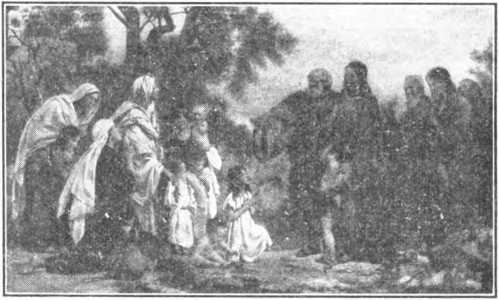

WT.B.5T.S.
Upon the earth distress of nations with perplexity; the sea and the waves (the restless, discontented) roaring, men’s hearts failing them for fear and for looking to know Ih^t :lUJlOn t <3Oflety)» f°r »he powers of the heavens (ecclesiasticsm) shall be shaken. . . When ye see these things begin to come to pass, then
know that the Kingdom of God is at hand. Look up, lift up your heads, rejoice, for your redemption draweth nigh.—Matt. 24:33; Mark 13:29; Luke 21:25-3L
aJJtglljt ais@Sw-Isalal?
Vol. XLVI
Semi-Monthly
No. 1
Anno Mundi 6053—January 1, 1925
CONTENTS
ROCK OF AGES ...
Other fou relation can „ no man lay-'.**.* ■ A^R AN SO M; FOR; A L i
Work for the Anointed ...........
Day of Vengeance .....................
Zion .............................................
The Battle ...................................
Comfort Zion .............................
Is a Climax Near? ...................
The Battle Is the Lord's ...........
Comfort All .............-...................
Why This Training? .................
Prayer-Meeting Text Comments The Lord's Supper.......................
Jesus Comforts His Disciples Calendar for 1925 .......................
Erratum .........................................
Convention at San Francisco...
3
..... 5
_____ 8
_____ 8
...... 9
......10
______11
______12
______14
______ 2 ______ 2
____2
“I will stand upon wy watch and will set my foot upon the Tower, and will watch to see what He will say unto me, and what answer I shall make to them that oppose me.”—Habakkuk 2:1.
THIS JOURNAL AND ITS SACRED MISSION
THIS journal is one of the prime factors or instruments in the system of Bible instruction, or “Seminary Extension”, now being presented in all parts of the civilized world by the Watch Tower Bible & Tract Society, chartered A. D. 1884, “For the Promotion of Christian Knowledge”. It not only serves as a class room where Bible students may meet in the study of the divine Word but also as a channel of communication through which they may be reached with announcements of the Society’s conventions and of the coming of its traveling representatives, styled “Pilgrims”, and refreshed with reports of its conventions.
Our “Berean Lessons” are topical rehearsals or reviews of our Society’s published Stldies most entertainingly arranged, and very helpful to all who would merit the only honorary degree which the Society accords, viz., Ferbi Dei Minister (V. D. M.), which translated into English is Minister of God's Word. Our treatment of the International Sunday School Lessons is specially for the older Bible students and teachers. By some this feature is considered indispensable.
This journal stands firmly for the defense of the only true foundation of the Christian’s hope now being so generally repudiated —redemption through the precious blood of “the man Christ Jesus, who gave himself a ransom. [a corresponding price, a substitute] for all”. (1 Peter 1: 19 ; 1 Timothy 2 : C) Building up on this sure foundation the gold, silver and precious stones (1 Corinthians 3: 1115; 2 Peter 1: 5-11) of the Word of God, its further mission is to “make all see what is the fellowship of the mystery which. . .has been hid in God, ... to the intent that now might be made known by the church the manifold wisdom of God”—“which in other ages was not made known unto the sons of men as it is now revealed”.—Ephesians 3:5-9,10.
It stands free from all parties, sects and creeds of men. while it seeks more and more to bring its every utterance into fullest subjection to the will of God in Christ, as expressed in the holy Scriptures. It is thus free to declare boldly whatsoever the Lord hath spoken—according to the divine wisdom granted unto us to understand his utterances. Its attitude is not dogmatic, but confident; for we know whereof we affirm, treading with implicit faith upon the sure promises of God. It is held as a trust, to be used only in hia service; hence our decisions relative to what may and what may not appear in its columns must be according to our judgment of his good pleasure, the teaching of his Word, for the upbuilding of his people in grace and knowledge. And we not only invite but urge oug readers to prove all its utterances by the infallible Word to which reference is constantly made to facilitate such testing.
TO US THE SCRIPTURES CLEARLY TEACH
That the church is “the temple of the living God”, peculiarly “his workmanship” ; that its construction has been in progress throughout the gospel age—ever since Christ became the world’s Redeemer and the Chief Corner Stone of his temple, through which, when finished, God’s blessing shall come “to all people”, and they find access to him.—1 Corinthians 3:16, 17; Ephesians 2; 20-22; Genesis 2S : 14 ; Galatians 3 : 29.
That meantime the chiseling, shaping, and polishing of consecrated believers in Christ’s atonement for sin, progresses; and when the last of these “living stones”, “elect and -precious,” shall have been made ready, the great Master Workman will bring all together in the first resurrection; and the temple shall be filled with his glory, and be the meeting place between God and men throughout the Millennium.—Revelation 15 : 5-8.
That the basis of hope, for the church and the world, lies in the fact that “Jesus Christ, by the grace of God, tasted death for evert) man,” “a ransom for all,” and will be "the true light which lighteth every man that cometh into the worlds, “in due time”.— Hebrews 2:9; John 1:9 ; 1 Timothy 2:5, 6.
That the hope of the church is that she may be like her Lord, “see him as he is,” be "partakers of the divine nature’,’ and share hia glory as his joint-heir.—1 John 3:2; John 17:24; Romans 8:17; 2 Peter 1:4.
That the present mission of the church is the perfecting of the saints for the future work of service; to develop in herself every grace; to be God’s witness to the world; and to prepare to be kings and priests in the next age.—Ephesians 4 :12 ; Matthew 24 s 14 ; Revelation 1:6; 20 : 6.
That the hope for the world lies in the blessings of knowledge and opportunity to be brought to all by Christ’s Millennial kingdom, the restitution of all that was lost in Adam, to all the willing and obedient, at the hands of their Redeemer and his glorified church, when all the wilfully wicked will be destroyed.—Acts 3 :19-23; Isaiah 35.
"PUBLISHCD tsr
WATCH TOWER.BIBLE &-TRACT SOCIETY
18 CONCORD STREET a o BROOKLYN, N-X U-SA
Foreign Offices : British: 34 Craven Terrace, Lancaster Gate, London W. 2; Canadian: 38-40 Irwin Avenue, Toronto, Ontario; Australasian: 495 Collins St., Melbourne, Australia; South African: 6 Lelie St., Cape Town, South Africa.
Please Address the Society in Every Case.
YEARLY SUBSCRIPTION PRICE: United States, $1.00; Canada AND MISCELLANEOUS FOREIGN, $1.50 J GREAT BRITAIN, AUSTRALASIA, and South Africa, 7s. American remittances should be made by Express or Postal Money Orders, or by Ban*: Draft. Canadian, British, South African, and Australasian remittances should be made to branch offices only. Remittances from scattered foreign territory may be made to the Brooklyn office, but by International Postal Money Orders only. (Foreign translations of this journal appear in several languages)
Editorial Committee: This journal is published under the supervision of an editorial committee, at least three of whom have read and approved as truth each and every article appearing in these columns. The names of the editorial committee are: J. F. Rutherford. W. E. Van Amburgh, J. Hbmert, R. H. Barber, C. E. Stewart.
Terms to the Lord’s Poor: All Bible students who, by reason of old ago or other infirmity or adversity, are unable tn pay for this journal, will be supplied free if they send a postal card each May stating their case and requesting such provision. We are not only willing, but anxious, that all such be on our list continually and in touch with the Berean studies.
Notice to Subscribers: We do not, as a rule, send a card of acknowledgment for a renewal or for a new subscription. Receipt and entry of renewal are indicated within a month by change in expiration date, as shown on wrapper label.
Entered as Second Class Matter at Brooklyn, N.Y. Postoffice., Act of March 3rd 1879^
By Means of “The At-one-ment”
STUDY X: “THE SPIRIT OF A SOUND MIXD" Week of Feb. 1... Q. 1-7 Week of Feb. 15... Q. 15-21 j | Week of Feb. S .. . Q. 8-14 Week of Feb. 22 . .. Q. 22-29 i
1925 CALENDAR
The year text for 1925 is: “Comfort all that mourn.” The calendar is being prepared by the Society. The illustration shows Jesus bestowing comfort upon others. Printed in six colors, the illustration is very attractive; and we believe
will be the most beautiful calendar that we have yet had. The calendar is 14x16. The price for a single copy is 35c; three for $1.00; ordered in lots of 50 or more, 25c each. We suggest that friends send in their orders at once.
ERRATUM
In the Watch Toweb for October 1, 1924, page 296, paragraph 66, line 4, a typographical error occurs: The word “vainly” should have been “valiantly”.
CONVENTION AT SAN FRANCISCO
A four days’ convention will be held at San Francisco February 12-15. The convention will bo addressed by Brother Rutherford, and Brothers Macmillan, Esldeman, Sexton, and others. For further information address C. R. Little, 4043 19th St., San Francisco.
Vol. XLVI January 1, 1925 Tso. 1
“The Spirit of the Lord God is upon me; because the Lord hath anointed me to preach the good tidings unto the meek:... to proclaim ... the day of vengeance of our God; to comfort
all that mourn.”—Isaiah 61:1,2.
THE paramount duty devolving upon every intelligent creature is to glorify God. It is the expressed will of Jehovah that the unfolding and outworking of his plan shall be to his glory. When the divine program relating to man is complete, every feature thereof will reflect the dignity, majesty, and glory of God. Christians, being the chief recipients of Jehovah’s favor, should always be eager to do something to the glory of God. Working in harmony with the divine plan, and being prompted so to do by unselfish devotion to the Lord and to his cause, will accomplish for the faithful this desired end.
2The year 1925 is here. With great expectation Christians have looked forward to this year. Many have confidently expected that all members of the body of Christ will be changed to heavenly glory during the year. This may be accomplished. It may not be. In his own due time God will accomplish his purposes concerning his own people. Christians should not be so deeply concerned about what may transpire during this year that they would fail to joyfully do what the Lord would have them to do.
"A Christian is one who is begotten and anointed of the holy spirit. He has agreed to do the will of God. The obligation devolves upon him to perform faithfully his part of the covenant. This he must do before he can enter the heavenly kingdom. The Lord is not taking men to heaven merely to save them, but that his purposes concerning the entire human family may be accomplished and that his own name may be glorified. There are some things for the Christian to do before he is taken to heaven. A failure or refusal to do those things would necessarily bar his entrance into the kingdom. Nor will the thing that the Christian actually does be the most important thing, but the spirit or motive by which he does it will be the deciding factor. That which should chiefly concern the Christian for this year then should be: Am I faithfully performing my covenant in the spirit of Christ ?
4The word “anointed”, as related to the Christian, means his divinely-given commission or warrant of authority. A commission is a formal statement conferring power and authority upon one or more creatures authorizing or commanding the doing of ceria ui things. One receiving such commission will, if he is discreet, from time to time consult the terms or provisions of that commission, and ascertain whether or not he is performing those duties.
6The anointed ones must hold fast to that which they have learned, to wit: That the Lord Jesus Christ, the Redeemer and Head of the Church, is now present and has taken his power and begun his reign; that the great fundamental truths of God’s plan have been restored to the Church, which restoration was foreshadowed by the work of Elijah; that the Lord has come to his temple and is examining the members thereof; that the present work of the Church this side of the vail was foreshadowed by the work of Elisha, who did both a slaying and a comforting work; that the part of the commission given to the Church yet unfulfilled is: To declare the day of vengeance of our God, and to comfort all that mourn.
6 An abundant entrance into the kingdom of our Lord and Savior is the sincere desire of each one of the anointed. To this end it is essential that he hold fast in these precious truths. He must hold fast with fortitude; he must increase in knowledge, hence the necessity for the study of the Word of God; he must exercise self-control and cheerfully drink the potion which the Lord has poured for him; he must grow in godliness, manifesting love for the brethren and an unselfish devotion to the Lord and his cause. The doing of these things will require the faithful performance of the obligations laid upon the Christian by his divinely given commission. The promise is, that if he gives diligence to the doing of these things he shall never fall, and he shall have an abundant entrance into the everlasting kingdom. It seems clear, therefore, that activity in proportion to opportunity is now required of all who will from this time forward enter into the kingdom.
7The commission to the Church shows there are two classes that are the objects of comfort, namely: (1)
Those of Zion who mourn; and (2) those of the world who are seeking consolation in this time of distress. Those whom the Lo'rd uses to bring consolation to others are designated by him as comforters. Only those who have received the anointing of the holy spirit are thus designated. The commission of the Christian is broad and comprehensive. He is commanded to comfort all who mourn as opportunity is afforded him. To comfort means to assist, aid, fortify; to impart strength and hope, to encourage, to relieve, to refresh, to console, cheer and make glad those who are sad, depressed and in distress, and those who mourn.
DAY OF VENGEANCE
sThe world is in distress and perplexity, and men’s hearts are failing them for fear. Selfishness is gone to seed ; and the people groan and travail in pain under the great burdens, and greatly desire to be delivered. It is the duty of the Church to tell the people what these, things mean and how deliverance will come. The old world under Satan’s rule has ended; the rulers of earth have had their day. God is expressing his vengeance against Satan’s organization, and Satan’s bulwarks must fall to make way for the kingdom of righteousness. We should make it plain that this day of wrath is the expression of God’s vengeance against an iniquitous system. We are not authorized to use vindictive speech against any one. Our duty is to tell the people the plain truth, that they may be advised what to expect, and that the minds of some of them at least may be prepared to receive the kingdom of the Lord.
ZION
’The primary obligation laid upon the anointed ones is to comfort them that mourn in Zion. The term “Zion” means God’s organization. Those who are consecrated to do the will of God, and who are begotten and anointed of his spirit are a part of Zion. It may be asked: Since these are at peace with God and have received the precious promises, why should any of them need to be comforted? The mere fact that the Lord commissions each one of Zion to comfort other members thereof is proof conclusive that the members of Zion at times need some consolation. One of the most blessed privileges the Christian has is to aid and comfort his brother in Christ. Each one who is properly exercised by his own trials will more fully appreciate the privilege of sympathizing with and consoling his brother who is in tribulation. Without doubt the Lord permits trying experiences to come to the various members of Zion to enable them to grow more sympathetic with their brethren.
10The Head of Zion is the Lord Jesus Christ. The road which he trod alone must be traversed by his true yoke-fellows under conditions similar to those that beset the Master’s pathway.
THE BATTLE
"Fiom its beginning the destruction of Zion has been attempted by Satan and his seed. This is well known to every Christian. Seeing now that our Lord has taken his regal power, that the day of God’s vengeance is hero, and that it must be declared by the Zion class, wc may know with certainty that Satan will employ all of his powers to destroy the seed of promise. A great conflict, therefore, is to be expected. The Lord has given us much Scriptural proof that Satan will throw the power of his entire army against the anointed ones of God. The tour different names by which Satan is known and designated indicate the method of his attack.
1?As a “serpent” we are to expect that Satan will present all manner of deceptions, both of doctrine and of practice, in his attempt to deceive and to seduce the anointed ones. We have the assurance, however, that it is not possible for him to deceive the very elect. But only the faithful will be of the very elect. The faithful ones will not be turned aside from the Lord's message and his methods of promulgating it because of the wily deceptions of that old serpent, the devil.
13As a slanderer, which the name “devil” signifies, we are to expect the enemy to level against the anointed ones of God all manner of vile, malicious, false, and slanderous accusations. Being thus forewarned, let every Christian see to it that he does not lend himself at any time to the devil by slandering or by repeating a slanderous accusation spoken against his brother. Let each one of the anointed have in mind, if he hears some slandering his brother, that this is the work of the devil and not the work of the Lord, nor of those who have th : spirit of the Lord. Let him remember that to repeat a slanderous accusation is equally as bad as telling it first-hand. Let each one who is of the anointed, keep in mind that the Lord Jesus has laid down a code of procedure directing how the offenders amongst the anointed shall be dealt with, and that the only safe course for the Church to pursue is to follow closely that code of procedure.—Matthew 18:15-17.
“Satan means opposer; and we are sure that Satan will continue to oppose every effort on the part of the anointed to make known the message of truth; and that to accomplish his purpose he will intimidate, browbeat, and discourage those who are diligently striving to advertise the King of Glory and his kingdom.
15As “dragon” means devourer, we may be sure that the enemy will resort to every possible wicked scheme to devour and destroy the anointed ones of the Lord.
16These assaults against the anointed ones by the enemy will cause some to mourn. It is the will of God that others of Zion shall comfort those who do mourn.
17It is reasonable to conclude that the devil now sees that his time is short. And since he sees this, we may be sure that he has great wrath against the anointed ones of God; that he will make war with the remnant of the seed of promise now on earth, and will make a desperate effort to destroy all those who are diligently keeping the commandments of the Lord. The chief commandment given to the church now is to fulfil the obligations of the divinely-given commission. Therefore each one must he diligent in faithfully trying to perform these obligations by activity in the service. Against these the devil will do his utmost.—Revelation 12:12-17.
18Again, the Scriptures show that that element of the devil's organization designated as the “beast” will make v ar with the Lamb. (Revelation 17: 14) This is in harmony with the words of the Prophet, that these shall take counsel against the Lord and against his anointed and attempt their destruction.—Psalm 2:2,3.
1BNow is the time when the anointed of Jehovah, under the leadership of their Head, are binding the kings with chains and their nobles with fetters of iron. (Psalm 149: 8) And this is being done by the faithful ones proclaiming the message of truth. It is these bonds or fetters that the devil’s organization is trying to throw off and cast away from itself.
2,,The Christian is definitely informed that the time must come when the Lord Jesus Christ, as a conquering hero, enters upon his campaign to judge and to make war against Satan and his organization; and that this takes place during the day of the vengeance of our God, and when the Lord, the King of Glory, begins to exercise his kingly power.—Revelation 19:11,12.
21This and other scriptures show that the fight is God’s fight against Satan, the Lord’s message of truth against Satan’s message of error and wickedness. The fight on Jehovah’s side is led by the Lord Jesus Christ. The Prophet, referring to this battle, propounds the question: “Who is the king of glory?’’ And his own question he answers: “The Lord strong and mighty, the Lord mighty in battle.”—Psalm 24: 8.
22 As a further identification of the One leading the fight against the evil one, the Prophet says: “Thou art Hirer than the children of men; grace is poured into thy lips; therefore God hath blessed thee for ever. Gird thy sword upon thy thigh, 0 most Mighty, with thy glory and thy majesty.”—Psalm 45: 2, 3.
23The Scripture is also clear that the fight involves truth against malicious error and wickedness. (Isaiah 11:4) The Scriptures speak of God as “the Lord, a man of war.” (Exodus 15: 3) This description is applicable to this day of God’s vengeance.
-“The day of the final conflict of the Lord against the entrenched forces of error must of necessity be a very trying time for all. “For the day of the Lord is great and very terrible; and who can abide it ?” (Joel 2:11) That the anointed of the Lord on this side of the vail, as well as those on the other side, must participate in this great conflict and continue faithful even unto the end, seems clearly indicated by the Scriptural statement : “And he was clothed with a vesture dipped in blood: and his name is called The Word of God. And the armies which were in heaven followed him upon white horses, clothed in fine linen, white and clean.” —Revelation 19 :13,14.
2,r’Of necessity this must be a battle in which no quarter is asked and none given. The army of the enemy is an imposing one. It is composed of a great host of visible agents and representatives of the devil, as well as of a multitude of invisible ones. The Lord’s anointed are small in number. ’This army of the evil one will strike terror to the hearts of all who have not a large measure of the holy spirit. For the anointed to withstand the shock of battle will require absolute faith and confidence in the Lord, an abiding in the shadow of his hand, and a faithful keeping of his commandments. It is no time for selfishness. It is a time for love to be manifested perfectly; and love is the expression of unselfishness. Each one must remember that not only are the members of Zion commanded to love one another even as Jesus loved us, but that each one is specifically commanded to minister unto his brother in Zion.
2,5Some of the anointed will probably yield to the seductive influences about them, join the enemy, and thereby make the burden of the faithful ones still more difficult to carry: Some will be stronger than others in the fight because of their greater faith, zeal and love, and having a larger measure of the holy spirit. “We then that are strong ought to bear the infirmities of the weak, and not to please ourselves.” (Romans 15: 1) Otherwise stated, we should put aside selfishness and lovingly render aid to our brethren.
COMFORT ZION
270nly those who have the spirit of the Lord are considered in this text: “The spirit of the Lord God is upon me; because the Lord hath anointed me ... to comfort all that mourn.” Every one, in proportion to the spirit of the Lord he possesses, will be on the alert energetically and actively to obey this commandment of the Lord. Remember that those who composed the little band of Gideon were awake, on the alert to let their lights shine, and did so unselfishly. This was indicated by the breaking of their pitchers, foreshadowing that the members now must even sacrifice themselves unselfishly to let their lights shine. The unselfish ones in Zion remember that part of their commission which reads: “Give unto them [that mourn in Zion], beauty for ashes, the oil of joy for mourning, the garment of praise for the spirit of heaviness.” They remember that the Lord says: Do this in order that those who are thus comforted may be encouraged to hold fast in the battle and gain the victory, to the end that they may “be called trees of righteousness, the planting of the Lord, that he might be glorified.” What is meant by thus ministering to our brethren in Zion?
28“Ashes” symbolize deep humiliation, great sorrow and woe. (2 Samuel 13:19; Esther 4:1-3; Job 2:8; 42:6; Daniel 9:3; Jonah 3:6; Matthew 11:21) This great humiliation, sorrow or woe may come to the Christian because of the seeming triumph of the enemy, resulting from slander and wicked accusations; or because of treachery on the part of one or more upon whom he had reason to rely; or because of injustice that others may practise against him, bringing upon him humiliation in the eyes of others and making him the object of reproach.
29If an anointed one of the Lord finds his brother in Zion suffering such humiliation, sorrow or woe from any reason, he is commanded to give him beauty for such ashes.
"“Beauty” is a symbol representing embellishment or ornament about the head or of the mind. “In that day shall the Lord of hosts be for a crown of glory, and for a diadem of beauty, unto the residue of his people, and for a spirit of judgment to him that sittcth in judgment, and for strength to them that turn the battle to the gate.” (Isaiah 28: 5, 6) The residue, or remnant refers to the last members of the Christ on earth. To give such beauty means to point them to something that will ornament their minds, to induce happy and beautiful thoughts, and thereby bring strength.
31It is the privilege of the anointed to point such to the fact that the Lord is his strength; that if the way between him and the Lord is clear, and he has the Lord’s approval, then he need not care for the reproach that may come upon him by reason of man’s injustice or wrongdoing; that he should remember that Jesus made himself of no reputation, and that the Christian’s reputation in this world is of no value; that he should look up into the face of the Lord and rejoice that he is privileged to fill up some of the sufferings of Christ that were left behind. (Colossians 1:24) He should bid such rise and joyfully engage in the battle of the Lord by proclaiming the message of the King; should point him to the sweet message of the Lord, saying, “Awake, awake; put on thy strength, 0 Zion; put on thy beautiful garments”; should point him to the fact that it is those who are of the feet of the Zion class, proclaiming this message, that are counted beautiful in the eyes of the Lord.—Isaiah 52:1-7.
32We should call the Christian’s attention to his divinely-given commission and bid him to arise and shine, because his Light, the King of Glory, is come, and because the glory of the Lord is risen upon him; that the Lord has manifested his approval by permitting him to have these privileges and blessings. ■—Isaiah 60:1.
33To any one in Zion who is thus in sorrow, symbolized by ashes, give him beauty by pointing him to the fact that he is privileged to be a branch in the true vine; and that if he shares the sufferings of the Lord, he shall share in His beauty and glory.—Hosea 14:6; 2 Timothy 2:11,12.
34Mourning,” in Isaiah 61: 3, means to bewail or lament, which may result by reason of one’s own foolishness or carelessness (Psalm 38: 5, 6), or because of his wandering away from God (Psalm 42: 1-6), or because some one has wrongfully induced him to turn away from his faithfulness in following the Lord, thereby causing him to become weak in faith and in zeal for the Lord (Psalm 43: 1-3), or because of fear of some threatened or impending calamity.—Daniel 10: 2.
35 A Christian may foolishly become careless regarding the opportunities of serving the Lord, thus causing himself to mourn when he discovers his mistake. He may wander away from the Lord, thus causing himself great sorrow and distress. He may permit some deceitful ones, who claim to be brethren in the truth, wrongfully to turn him away from the Lord’s service and cause him to become idle and indifferent, and thus cause himself much mourning. It is the privilege and duty of the anointed of the Lord, if he finds his brother in such distress, to dispel his mourning and to comfort him by giving him the oil of joy for such mourning.
3G“Joy” means gladness, satisfaction and delight because of the blessings of goodness, present or hoped for, both for oneself and for other creatures obedient to the law of God. (1 Thessalonians 2:19,20) The joy of Jesus consisted in the possession of sweet fellowship with the Lord Jehovah, and the prospect and certainty of bringing all the obedient ones of mankind back into full harmony with God. (Hebrews 12: 2) If we possess the blessings of the goodness of the Lord now, or have reason to expect such blessings in the near future and therefore have a hope for the same, such brings joy and delight.
37Let the anointed one give his brother the oil of joy for mourning by pointing the sorrowing one to the fact that the Lord of Glory is now present; that he has gathered unto himself his saints; that he has come to his temple, and is examining and receiving his approved ones; that these are present blessings of goodness which can be had only by the Christian; and that the Lord is saying to the approved ones: ‘Because of your faithfulness over a few things I will make you ruler over many things; I invite you now to enter into my joy.’ Point the mourning one to the fact that it is his blessed privilege to cease his foolishness and carelessness, and to return whole-heartedly to the Lord and to his service; to cease to listen to or hear the voice of the mischievous and wicked ones that turned him away from the Lord and his service; that it is his blessed privilege to seek God through the merit of Christ, his Advocate, and receive forgiveness for his imperfections. Point him to the precious promises that if he is on the Lord’s side and faithfully serving him no evil can befall him and no enemy can prevail against him. (Psalm 91:1-12; Romans 8:31) Point him to the further fact that the precious promise given tot him relates to the important fact, namely: that all the anointed ones have the privilege of becoming members of the house of sons, provided they continue to hold fast the beginning of their confidence and the rejoicing of the hope unto the end (Hebrews 3:6); point him to the fact that mourning makes him weak in the presence of the enemies, and that the joy of the Lord is his strength.— Nehemiah 8:10.
3SIt will be the privilege of the anointed one to say to his brother: “Rejoice in the Lord alway: and again I say, Rejoice. Let your moderation be known unto all men. The Lord is at hand.” (Philippians 4: 4-7) Be not overburdened about anything; but in all things with thanksgiving make your wants known unto the Lord, and he shall keep your heart and mind through Christ Jesus.
39Let the anointed one in Zion point his mourning brother to the fact that the crown of life is promised to them that love the presence of the Lord; that the Lord is now present; and that whoever loves him and loves his presence will delight in keeping his commandments by making known to others his presence and the blessings of his kingdom. Activity in the Lord’s service brings joy and more activity; and joy makes the Christian strong in the Lord and in the power of his might.
40The Christian who now appreciates the presence of the Lord and his kingdom, who is striving to keep the Lord’s commandment by unselfishly devoting himself to the Lord, to his cause and to his brethren, is abiding in the Lord and necessarily must rejoice.
41 Jesus said: “If ye keep my commandments, ye shall abide in my love; even as I have kept my Father’s commandments, and abide in his love. These things have I spoken unto you, that .iy joy might remain in you, and that youi' joy might be full. This is my commandment, that ye love one another, as I have loved you.”—John 15 : 10-12.
42“Heaviness” means to be dull, faint, despondent, depressed in spirit, discouraged and sad. This condition may result to a Christian by failure to study, to appreciate and to obey the Word of God, and therefore to a failure to engage in the proclamation of the message of the kingdom (Hebrews 5:11,12; Psalm 119: 27, 28); or it may be because there is a seeming delay in the fulfilment of the promise for the complete establishment of the kingdom. (Hebrews 10:32-37; Proverbs 13:12) Some may think that the kingdom is delayed, that their hope is deferred, and that the chronology is wrong; and they may become heavy in spirit, dull, faint, depressed or despondent. Or some may get into this condition because some dear friends have failed to appreciate and obey the Lord, and have wandered away from him (Romans 9: 2, 3), or because of divers temptations into which they have fallen.—1 Peter 1: 6.
43We can see how some in Zion this year may be found in a spirit of heaviness. Others in Zion are going to give these the garment of praise for the spirit of heaviness. It will be a blessed privilege so to do.
44A garment is a covering or robe by which one is marked or distinguished. (Deuteronomy 22: 5) Praise means due acknowledgment and proclamation of the perfections, the great and wonderful excellencies of the Lord, and to laud and magnify his name. It means to mention with joy Jehovah’s great plan and how it is revealed and carried into action.
45To put on the garment of praise therefore means to distinguish oneself by boldly, fearlessly and joyfully proclaiming the truth, advertising the King and his kingdom; and by pointing the people to the fact that Jehovah is God, and that his power is now being lovingly manifested on behalf of mankind. Everyone who puts on this garment of praise will be actively engaged in kingdom work, as the Lord gives opportunity, and will be doing it with joy. He will thereby distinguish himself from all others of the world, and particularly from those who are of the devil’s organization. He will be a marked person amongst all others.
40If then we find a brother in the spirit of heaviness, it will be our privilege to call his attention to the precious promises and to the meat in due season which the Lord is placing upon his table for his people; to point him to the scriptures which show that it is now the privilege of the Christian to do the will of God, and faithfully to tarry and watch for his due time for the fulfilment of his promises, having faith always that God, having promised a thing, will do it. Point him to the fact that love is the principal thing and that all who love the Lord will joyfully keep his commandments. —John 14:15; 1 John 5: 3, Diagloti.
47Putting on the garment of praise means doing the Lord’s will and his work in his appointed way, giving all credit and glory to the Lord. He who thus joyfully engages in the Lord’s service can not be dull, idle, faint, or in the spirit of heaviness, but will be strong in the Lord. He will delight to wait upon the Lord, trusting in the supreme wisdom of the Lord, that he will bring to pass his good will in due time and for the best interest of those that love him. He will be of that class mentioned by the Prophet, who said: “But they that wait upon the Lord shall renew their strength; they shall mount up with wings as eagles; they shall run, and not be weary; and they shall walk and not faint.”—Isaiah 40: 31.
4SWhata wonderful work the Church has to do this year! What a blessed privilege it will be to comfort those in Zion that mourn and to enable them to grow strong in the Lord! But it may be asked: Why should this be done for our brethren in Zion ? And the Scriptures answer: “That they may be trees of righteousness, the planting of the Lord, that he might be glorified.” To do this will be an unselfish and loving expression toward our brother; and if we love our brother we want him to gain the victory, that he may enjoy the endless blessings of the Lord and bring glory to his name.
IS A CLIMAX NEAR?
49The declaring of God’s vengeance against Satan and his agencies we should expect to cause the enemy to become angry and to become active against the Lord’s people. The Indictment against ecclesiastics, widely distributed, has been a broadside against the enemy’s stronghold. May we not expect Satan and his agencies to take counsel together, against the Lord and against his anointed? (Psalm 2: 2, 3) The anointed of the Lord are his hidden ones. (Psalms 27: 5; 91 : 1-12) The Lord indicates that at some time a conspiracy will be formed by the combined agencies of Satan against his anointed. (Psalm 83:1-8) This prophecy indicates that the enemy take special notice of the Lord’s anointed, or hidden ones; that they take counsel together and say: “Come and let us cut them off from being a nation [a holy nation].” They consult together with one consent and form a confederacy; and the enormous preparations indicate a combination of the devil’s forces against the anointed of the Lord. The conspirators constitute the devil’s organization, and include doubtless the Judas class; that is to say, those who have claimed to be the Lord’s but who have become offended and have imbibed the spirit of the enemy. Jesus indicated this when he said: “And then shall many be offended, and shall betray one another, and shall hate one another.” (Matthew 24:10) If it be true that we are approaching the last days of the Church in the flesh, then it is reasonable to conclude that a time of crisis is at hand; and that a climax in the Church’s experience is near. There is no disposition to alarm anyone; but “to be forewarned is to the forearmed”.
50Let every consecrated, anointed one see to it that he does not in any manner lend himself or herself to the devil by evil surmising, evil speaking, slanderous accusations, or in any other way to defame the name or reputation of the brethren. The anointed of the Lord are one in Christ Jesus, and must stand together. They are not commissioned to be judges of each other. If one speak evil of his brother he thereby makes himself the judge of his brother contrary to the law of God. (James 4:10-12) Some of the Lord’s consecrated ones may do wrong; and if so, the Lord will judge them. The Lord calls upon no one else to judge his people, but plainly says: “Touch not mine anointed.” (Psalm 105:15) It is presumptuous on the part of any to attempt to judge or administer punishment to the anointed of the Lord unless that be done in the Lord’s appointed way. If some action becomes necessary against the erring one, the Lord prescribes the manner for taking such action. (Matthew 18:15-17) There is no other proper nor excusable way. Any other course taken lays oneself open to the attack of the enemy, and opens the door for him to join the enemy’s forces.
51Let the anointed of the Lord now remember the words of St. Paul, and stand fast in one spirit, standing shoulder to shoulder, fighting for the gospel of the kingdom, and never for one moment quailing before the enemy.—Philippians 1: 27, 28, Weymouth.
52lt will require courage, faith, love and patience and an unselfish devotion to the Lord to stand during the year and to progress in the spirit of the Master toward the great goal.
THE BATTLE IS THE LORD’S
S3Let no one of the anointed be fearful, discouraged or dismayed. Perfect love will cast out all fear. (1 John 4:17,18) Jehovah will not leave his people comfortless. He is the God of all comfort and the Father of mercies. (2 Corinthians 1:1-3) The enemy may combine all of his forces against the anointed one, and the very thought of the enemy’s army would tend to strike terror to the hearts of the few. But let each of the anointed remember that this battle is the battle of the Lord. We know that victory is absolutely certain.—Revelation 17:14; 19 : 11,12.
54If our faith in God, our love and loyalty for him, be complete there will be no occasion for fear. To be sure, in our own strength we could not withstand the assault of the enemy; his combined forces would drive the little band of the anointed like as the strong wind drives the chaff and would quickly destroy them. But if God be for us, who can be against us? (Romans 8: 31) The anointed can truly say: “The Lord is on my side; I will not fear: what can man do unto me?” —Psalm 118:0.
A PICTURE
53The recorded experiences concerning the covenant people of God were written for the benefit of the Church, to the end that the Church, while patiently enduring fiery experiences, might receive comfort through the Scriptures and have hope of gaining the victory. Of this we are definitely sure. (Romans 15: 4) It therefore seems to be in harmony with the will of God that we, for our encouragement, may consider some of the pictures of old, made by him with his chosen people. One of these pictures we find in 2 Chronicles 20:1-30.
5GJehoshaphat, the king of Judah, made some grievous mistakes. Yet he diligently tried to serve the Lord; and Jehovah dealt mercifully with him and the people under his rulership.
57The enemies of Jehoshaphat formed a conspiracy to attack and destroy the anointed people of God. A message was brought to Jehoshaphat that a great multitude was marching to the attack. He proceeded to assemble all the people of his realm to Jerusalem before the temple. He brought the men and women and their little children, and stood in the temple, and then and there appealed to God for help. He said: “Art not thou our God, who didst drive out the inhabitants of this land before thy people Israel, and gavest it to the seed of Abraham thy friend for ever?” He then calls God’s attention to the fact that his enemies had combined to destroy the people of God, and then said: “0 our God, wilt thou not judge them? For we have no might against this great company that cometh against us; neither know we what to do: but our eyes are upon thee.”
5SA11 of Judah stood before the Lord with their little ones, their wives and their children. These helpless women and little children, standing there before the Lord, was a sight of pity before the Lord God. They well picture the helplessness of the anointed of the Lord before their host of enemies, and well show the absolute dependence of the anointed upon the Lord. God heard the prayer of Jehoshaphat. Then the Lord there anointed Jahaziel, one of the Levites; and he, being thus anointed with the spirit of the Lord, spake as the Lord's mouthpiece, and said: “Hearken ye, all Judah, and ye inhabitants of Jerusalem, and thou King Jehoshaphat. Thus saith the Lord unto you, Be not afraid nor dismayed by reason of this great multitude; for the battle is not yours, but God’s.... Ye shall not need to fight in this battle; set yourselves, stand ye still, and see the salvation of the Lord with you, 0 Judah and Jerusalem: fear not, nor be dismayed; tomorrow go out against them; for the Lord will be with you.”
59Early next morning Jehoshaphat, under the direction of the Lord, went forth with the people and called upon them to believe on the Lord God and to hear his word. Then Jehoshaphat proceeded to appoint certain ones for a specific purpose. Be it noted what they were to do. Let it be emphasized that they were not to be sad of countenance, that they were not to cover themselves with sackcloth and ashes, that they were not to mourn, that they were not to have the spirit of heaviness. They knew that they were face to face with a great host of warriors. They were absolutely incapable of meeting these warriors on equal terms. So Jehoshaphat “appointed singers unto the Lord, and that should praise the beauty of holiness, as they went out before the army, and to say, Praise the Lord; for his mercy endureth for ever.” And when these singers began the singing of praises of the Lord Jehovah, the Lord set an ambush against the enemy; and they began to fight amongst themselves, and slew each other.
60The Scriptures seem to indicate clearly that the whole force of Satan will be gathered together to assault the anointed of the Lord. Why was this picture put into the Bible? Are we not warranted in taking this as a message of comfort by which we can learn a lesson that the battle is that of the Lord; and that while the battle is on between Jehovah and the devil, under the leadership of “the Faithful and True” the anointed ones will have some duties to perform ?
61They are not to wield carnal weapons; but God purposes that they shall act as his witnesses. “Ye are my witnesses, saith the Lord, that I am God.”—Isaiah 43:12.
62“I have put my words in thy mouth, and I have covered thee in the shadow of mine hand, that I may plant the heavens, and lay the foundations of the earth, and say unto Zion, Thou art my people.” (Isaiah 51: 16) These are the feet of him that bringeth good tidings. They are his watchmen, and they must be singers. The song they sing must be of Moses and the Lamb, proclaiming the prophecies of God, the fulfilment of prophecies, the end of the world, the kingdom of heaven at hand, and pointing the people to the King and his kingdom. (Revelation 15: 3) “Thy watchmen shall lift up the voice; with the voice together shall they sing; for they shall see eye to eye, when the Lord shall bring again Zion.”—Isaiah 52: 8.
03We may be near the time of’severe testing for the Church; but let the anointed of the Lord remember that the hand of the Lord is over them and, continuing faithful, they shall stand victorious with him on Mount Zion.—Revelation 17:14.
COMFORT ALL
64The world is now in a state of great distress and sorrow. The spirit of the Lord has departed from nominal Christendom. Their unfaithful shepherds have abandoned the Lord and his cause, have joined forces with the devil and have left the people without food and without help. (Ezekiel 34:1-12) The enemy Satan has mustered all his forces and is making a desperate attempt to discredit God completely, to make him appear a liar, and to make the religion of Jesus Christ appear a fraud and a snare. The devil has brought a mighty flood of error, falsehood and slander upon the peoples of the world, blinding them to God’s plan and purposes; and the order-loving ones of the earth are in great discomfort. What, then, is the plain duty of the anointed of the Lord at this time?
65Through his prophet God answers: “When the enemy shall come in like a flood, the spirit of the Lord shall lift up a standard against him.”—Isaiah 59:19.
66Be it noted that the spirit of the Lord lifts up a standard against the devil, the enemy. Then it necessarily follows that only those who have the spirit of the Lord, and are anointed of the spirit, will be used by him in lifting up this standard. It seems clear that the standard here mentioned is the message of truth, the message of the kingdom. (Revelation 19:15; Isaiah 11:4) This, then, is the means that the Lord will employ to comfort the order-loving ones on earth. The commission given to the anointed therefore lays upon them the obligation of comforting all in the world that mourn by proclaiming to them the Lord’s kirgdom and by telling them what it will mean to mankind.
67While it is necessary to declare that the trouble is God’s vengeance, we should emphasize the fact that peace and comfort will come to the people only through the establishment of God’s kingdom. It will be the privilege of the Christian this year to tell the people that the kingdom of Messiah will cause the wars of the earth to cease and will bring to them lasting peace; that in his kingdom there will be no profiteers to oppress the people and rob them of their rights, no conscienceless politicians to misrepresent them; that there will be no false prophets to mislead them; that the King will rule in righteousness and judge the meek and poor with equity; that famines will cease in the earth; and that yielding its increase, the earth will provide plenty for all; that sickness and disease will pass away and instead will come health and strength until “the inhabitant shall no more say: I am sick” (Isaiah 33: 24) ; that the obedient ones of the world, under the righteous reign of the Lord will be restored to a perfect condition of mind and body; that the eyes of the blind will be opened and the ears of the deaf be unstopped; that the dead shall return from their tombs; that families tom asunder shall be reunited and that the blessings of the Lord will continue to reach out and fill the earth with gladness until the knowledge of the glory of the Lord shall be before the minds of all; and that the people shall enjoy peace, prosperity, life, liberty and happiness; and that by keeping the sayings of the Lord they shall live forever and never die; that the earth shall be made a fit habitation for man, and in the course of time the earth will be filled with a happy, joyful race of people singing the praises of Jehovah and of the Lord Jesus.
WHY THIS TRAINING?
68God is putting Zion through a course of instruction and training. And why? The answer is that from the foundation of the world it has been God’s purpose to establish a kingdom of righteousness, that through the ministration thereof mankind might be fully restored. It is his plan that his organization shall be used to accomplish this purpose, the Lord Jesus being the Head of such organization. In the picture of the kingdom given by the Revelator the Christ, Head and body, is represented by a tree of life, the leaves of which are for the healing of the nations. This picture suggests that the nourishment and healing for the sin-sick and starving world and for their upbuilding and restoration, come through the Christ.
csThe Christ is composed of Jesus the Head, and 144,000 members of his body. Therefore in the picture given by the prophet Isaiah each one of the anointed ones is symbolized by a tree. The argument of the Prophet then is that the Lord has commissioned Zion to do certain things; and that a faithful performance of these things shall result in each one who is faithful being called a tree of righteousness, the planting of the Lord; and that this shall reflect the glory of Jehovah God, the great Creator.
™Let all the members of Zion now lift up their heads and rejoice, and continue to sing the praises of Jehovah while he goes before to fight the battle of his people. Let them be faithful, loyal and strong in the Lord and in the power of his might. The day of deliverance is at hand. In a little while they may have an abundant entrance into his kingdom, there to serve throughout the Millennial Age that is just opening, as trees of righteousness, by means of which blessings from Jehovah will go out to mankind, and which shall stand forever to the praise of Jehovah and the Lord Jesus.
71There is much to do during the year. Let us not be overburdened about just when we are going home. Let us think constantly upon the faithful performance of the duties now at hand in order that in his due time we may go home. Then our cup of joy will overflow. —Psalm 16:11.
QUESTIONS FOR BEREAN STUDY
What is the purpose of the outworking of the plan of God? How may this desired end be accomplished? K 1.
What is the expectation of some for this year? What should be our chief concern? If 2.
What is the obligation of a Christian? fl 3-5.
What is the desire of each anointed one? If 6.
Who are the objects of comfort? Who are to do this comforting? H 7.
What is our duty in this day of God’s vengeance? H 8.
What does the term “Zion” mean? Of whom is Zion composed? 51 9,10.
By whom is the battle waged? Will all of the anointed be enabled to meet the onslaughts with the same degree of fortitude? U 11-16.
Does the devil see that his time is short? Are members of his organization being bound? If 17-19.
Who is the conquering hero? Cite scriptures on this point. When do these apply? 11 20-23.
What is the nature of this final conflict? What is necessary to withstand the' battle? If 24-26.
What is the commission? What is meant by “ashes”? If 27-29. .
What is signified by “beauty”? How is it manifested? If 30-33.
W’hat is meant by “mourning”? How may it be dispelled? U 34, 35.
How may we possess joy? How may we dispense it to others? H 36-39.
What fact will cause the Christian to rejoice? What should be coupled with it ? U 40, 41.
What is heaviness, and what causes it? U 42.
How do we put on the garment of praise? If 43-47.
Why is it a wonderful privilege to be God’s representatives amidst strenuous times? U 48.
Has the enemy’s camp been bombarded? What is the result ? If 49.
What is expected of the anointed class? H 50-52.
What will dispel all fear, and make the Lord’s people impregnable to every foe? U 53, 54.
What are the details of a picture for our encouragement? H 55-59.
What are our duties, and what are our weapons? H 60-63. Why is the world in a state of distress and sorrow? What will the Lord do when the flood of error comes? H 64-67.
Why is a rigid course of training necessary? When will our cup of joy overflow? H68-71.
TEXT FOR FEBRUARY 4
“The Lord preserveth all them that love him."— Psalm H5:20.
IT IS comforting to the creature to know that the great Jehovah, whose power has no limitation and whose Word is unchangeable, has promised to preserve his creatures. Such knowledge gives confidence, peace of mind, courage, and joy.
To “preserve” means to hedge about, to guard, to protect, to watch and save. The true Church is not ignorant of the fact that Satan, the enemy, is employing all his agencies and powers to accuse, oppose, deceive, misrepresent, and destroy the seed of promise. At the same time there is no reason for the Christian to fear the devil or any of his agents, if he has a knowledge of the divine promises and confidently relies upon them. He who is for the Church is far greater than all that can be against it.—Romans 8: 31.
But the Christian must not lose sight of the conditions attached to this precious promise. Not everyone can claim the promise, not even every one that claims to be a Christian. Since the time has not yet arrived to extend the blessings of restoration to the world this text applies now only to the faithful Christian. The one who exercises full faith and confidence in the merit of the Lord, in the spirit of the Lord, and who is striving to follow in the Master’s footsteps may properly be called a Christian.
With such now the condition of preservation is, that he must love the Lord: “He that hath my commandments and kcepeth them, he it is that loveth me.” (John 14:21) To love the Lord, therefore, means to devote oneself unselfishly to his cause. The commandments of the Lord are so clear that his people cannot be in doubt about what they should do.
The opportunity is offered each child of God to declare the day of God’s vengeance, to declare that the kingdom of heaven is at hand, to comfort his brethren, and to comfort all that mourn, who desire comfort, which means that the child of God must be an active witness for the Lord to this extent.
Such have the absolute assurance that if they abide in the shadow of his hand they will be kept from the wicked darts of the adversary. Praise God for this wonderful assurance!
“Then, my soul, in every strait, To thy Father come and wait; He will always hear thy prayer, Thou shalt have his tender care.”
TEXT FOR FEBRUARY 11
“The joy of the Lord is your strength."—Nehemiah 8:10.
THIS means to be glad and rejoice in the Lord. Some feel glad for a time because of material blessings which they have, such as houses, lands, ease and bodily comfort. But this text applies to the Christian only; namely, the one who is in Christ, whose word is abiding in the Christian. He realizes the perilous times now on the earth, the great suffering and distress; but these do not disturb his inmost calm. He appreciates the fact that the enemy is using every power at his command to discomfort and destroy the Christian. He is fully aware of the fact that some who claim to be brethren lend themselves, for a time at least, to the devil by evil speaking and slander, working injury to others. None of these things bring any joy to him; neither do they discourage him, nor cause him to fear nor to be dismayed.
One who is really devoted to the Lord, because of love for him and his cause, has a real appreciation of the Lord’s presence, that he has really begun his reign, that there is a desperate battle on between the Lord and the forces of evil; and he knows that the Lord is certain of victory. He appreciates the fact that certain kingdom interests have been committed to him. that the Lord has J
come to his temple and is inviting the faithful to ent'r into his joy. The Christian now appreciates the privilege of battling in the cause of righteousness under the leadership of his king, and is confident that marvelous blessings upon the people will shortly follow.
It is the present great joy of the Lord to know that the time has come for him to remove from the minds of the people the misconception they have of his Father, and that God will shortly extend to them the blessings of peace, health, happiness and life.
The follower of the Master, who really enters into his spirit in this great work, can not refrain from being joyful in the Lord. This joy in the Lord is his strength ; and, no matter how desperate the battle may grow, if he continues to hold fast his confidence in the Lord and his rejoicing in the hope of seeing him face to face, this strength will carry him on to victory. Thus lie receives comfort from the Father, through Christ Jesus; and because he possesses the holy spirit, and with this joy and comfort that comes to him, he is enabled to be a comforter of others and thus to fulfil the purpose for which the Lord called him.
“Is thy cruise of comfort failing? Rise and share it with another;
And through all the years of famine It shall serve thee and thy brother.
Love divine will fill thy storehouse, Or thy handful still renew;
Scanty fare for one will often Make a royal feast for two.
“For the heart grows rich in giving; All its wealth is living grain;
Seeds which mildew in the garner. Scattered, fill with gold the plain.
Is thy burden hard and heavy?
Do thy steps drag wearily?
Help to bear thy brother’s burden;
God will bear both it and thee.”
--January 18---Luke 22:7-30----
OBSERVANCE CF LAST SUPPER—CUP DISTINCT FROM PASSOVER—TYPE AND ANTITYPE JOINED. “This is my body, which is given for you: this do in remembrance of me.”—Luke 22:19.
k FTER Jesus had concluded his discourse respect-yLA ing his return at the second advent, he began to
^prepare for the Passover supper. Apparently he had not told his disciples where he would keep the feast, perhaps to keep the knowledge from Judas and therefore to save interference by the Pharisees. Some have suggested that Jesus had an arrangement made to keep the supper at the home of the mother of John Mark. As the hour for the supper drew on, Jesus sent two of his disciples into the city to prepare for the company. That he had made an arrangement with someone for his rather large company seems certain.
2Jesus’ way of sending the two disciples, Peter and John, to the house was singular. On entering the city they would meet a young man carrying a pitcher of water. They were to turn and follow him, and then speak to the goodman of the house and to say: “The Master saith, My time is at hand” (Matthew 26: 18), and then to ask that he would take them to the prepared guest chamber. They were then to make final preparation. We may very properly take it that here wore both human care and divine oversight. Jesus was watchful and careful, and the Father completed the arrangement by having things fulfilled.
3When evening time came, Jesus went with his disciples into the city, attracting little or no notice. When they were seated he said: “With desire [longing] have I desired to eat this passover with you before I suffer.” (Luke 22:15) He knew that this would be the last time that he could partake of the Passover with his beloved disciples. It was not because he desired to get to the end of his ministry and suffering that he so expressed himself; for that would have meant a measure of impatience under his Father’s will for him. It was because he saw that on that night he could say to them many things impossible until then, and he longed to instruct them. Amongst other things he wanted to show them that he was the true Passover Lamb, and that only in his death could the true meaning of the Passover be realized. That night was to see a closing act of the Jewish Age; for never more would a Passover be acceptable to God. But besides that, there would be that night the opening of newer and greater things, of which the earlier ones were in some measure the type.
4It seems proper to mention again the difficulties which have arisen as to whether or not that night was the actual Passover night. Each of the synoptic gospels seems to preclude the possibility of doubt. But John’s gospel differs; it reads as if the Jews were to keep the Passover on the night after Jesus was crucified. One thing is clear; namely, that Jesus was slain as God’s Passover Lamb on the fourteenth day of the month. He wanted to cat this Passover with his disciples and to explain its meaning to them. It is the only recorded occasion of his doing so. He must cat the Passover, and follow it with the memorial of his death before the actual death take place. John 18:28 is shown to be thoroughly harmonious with the other gospels in The Watch Tower for March 15,1921, page 86.
5It seems certain, therefore, that Jesus died on the 14th day of Nisan; and that he ate the Passover on the night of what we call the 13th, which, of course, was the first portion of the 14th day. Perhaps this is the meaning of the message to the master of the house: “The Master saith, My time is at hand.” As they ate, Jesus would talk of the deliverance of Israel from Egypt which the meal commemorated, of the hopes it kindled, and of all it meant both to Israel and to Egypt: Happiness to the saved, agony to Egypt. He would speak of the blood of the lamb which protected the firstborn, and of the roast flesh which they all ate and which gave them strength for their journey, and of the bitter herbs which gave zest to the appetite.
6It was while supper was proceeding that Jesus, evidently with the purpose of bringing Judas to a conclusion, began to speak of the betrayal, saying, “Verily I say unto you, that one of you shall betray me.” (Matthew 26 : 21) He quoted the scripture: “He that eateth bread with me, hath lifted up his heel against me.” (John 13:18; see Psalm 41:9) This raised the cry from all: “Lord, is it I ?” and Judas had to take it up with the rest, only that Judas addressed his Master as “Rabbi”; he never called Jesus “Lord”. Jesus answered him privately: “Thou hast said.” (Matthew 26:25) He gave the sop of bread to Judas, partly that the foregoing scripture should be fulfilled, and partly to let John and Peter know who it was that should betray him. Judas took the sop, and with that hypocritical act Satan entered into him. He went out into the night to betray and to sell his Master.
’While they were still eating the passover, Jesus took a loaf and, breaking it, gave to each of the disciples, saying, “This is my body, which is given for you: this do in remembrance of me.” (Luke 22: 19) This gave to the disciples a new meaning to the Passover. They would perceive that Jesus meant that henceforth the Jewish Passover ceased for them, and that in future they were to break together a loaf of unleavened bread and eat it as partaking of his body, his human life, given for them, and to do this as a memorial of him.
’After supper (that is, when the Passover had been
eaten) Jesus took a cup of wine and passed it around in the same way. As drinking wine formed no part of the original Passover supper, it is evident that something more is intended than the thought of a covering by the blood of the Lamb. He meant that, but much more also. The cup of wine had become associated -with the Passover by custom, and Jesus made use of that custom to set forth new things in his memorial, for now the last Passover supper acceptable to God had been kept.
9This passing of the cup was something quite distinct from the Passover. As he passed it Jesus said: “This is my blood of the new covenant, which is shed for many for the remission of sins.” (Matthew 26: 27, 28) This was the first actual feature of Israel’s New Covenant. Jesus thus distinctly associated and linked together the Passover, the first actual feature of the Law Covenant (see Studies in the Scriptubes, Vol. 2, page 46), under which Israel were condemned, and their New Covenant by which they will be brought back into God’s favor and to life. The disciples must have been surprised as Jesus spoke of the wine as blood and then bade them drink it; for Israel was not allowed under penalty of death (Leviticus 17:10) to eat anything which had blood in it. They would remember that he had already said: “Except ye eat the flesh of the Son of man, and drink his blood, ye have no life in you” (John 6:53); but neither had they understood then, nor could they now. It was only when the holy spirit had come upon them that they could know what he had meant. To drink blood, then, was to be subject to death; and Jesus had asked them to drink with him and therefore to enter with him into death.
“The disciples loved their Master, they trusted him, they had given themselves to God through him, and they drank the cup. As Jews they might be expected to know that the New Covenant, like all other covenants, must be ratified; and the ratification by the offering of a victim would probably be in their mind. Hitherto nothing had been said in the Scriptures about the New Covenant having a victim, but now Jesus showed that he was that victim. He who was the real Passover Lamb was also God’s Lamb to provide the blood for the ratification of the New Covenant God had promised Israel. By this action Jesus symbolically showed that they were permitted to join with him.
“While Jesus was conscious that the crisis of his life was upon him, the disciples were ready to dispute amongst themselves about who should be greatest in the kingdom. Jesus did not judge according to the sight of his eyes. (Isaiah 11: 3) He saw them beyond the immediate present, when they would understand and when they, like himself, would be fully set for God, having the same spirit as he had. It was in view of this, ignoring their lack and self-seeking, that he spoke of them as those who had abode with him in his temptations. Now he joins them with himself in the power and glory of the kingdom he was to have. He said: “You are they who have continued with me in my trials. And I covenant for you, even as my Father has covenanted for me, a kingdom.” (Luke 22: 28. 29, Diaglott) They were to share in his sufferings and in his death, and they should share in his glory. In these words Jesus revealed the fact that God had made a covenant with him.
“Here, then, were joined in Jesus and the Church the three great covenants which God had made with the chosen people, his “elect according to the purpose of God”. (Romans 9:4; 1 Peter 1:2) Now began those things which should result in giving effect to every typical feature of the Law and, ultimately, in bringing to Israel all the blessings promised them under their New Covenant; and also that which should produce the seed of Abraham, of which company Jesus was the chief member. (Galatians 3 : 29) After Pentecost, when the power to understand came in measure upon them, the disciples began to see that those who trusted in Jesus, accepting him as the salvation of God, were like Israel’s firstborn.
13If Jesus linked the then present with the far-away past, the night much to be remembered (Exodus 12: 42), he also linked that night with the future. He looked forward to the time when he and his faithful servants would again eat together and together would drink the true wine, that of the joy of the Lord. If for a time wine was made to represent blood, and therefore death, that was not its permanent symbolism. It represents that which makes glad the heart of God and man. (Judges 9:13) There remains the still fuller joy now not far away, when the Lord and his faithful ones will see each other without any veil between.
QUESTIONS FOR BEREAN STUDY
What apparently is the reason that Jesus did not tell his disciples where the Passover Supper was to be eaten? Had Jesus made previous arrangement? II1, 2.
Why did he especially desire to partake of this supper with his disciples? If 3.
Was this particular Passover observed on the anniversary date? 1, 4,5.
Why did Jesus say: “One of you shall betray me”? Did Jesus openly expose Judas? 6.
What was the new meaning of the Passover? What did the bread represent? If 7.
After breaking the bread did Jesus immediately pass the wine, or was it after supper? Why did the wine mean more than just the blood? T 8.
What is the first actual feature of Israel’s New Covenant? What is it associated with? How is it possible to drink the blood of Jesus? If 9.
How is the New Covenant ratified? Who is the victim? Is the Church permitted to join? 10.
Did Jesus view the self-seeking of the disciples compassionately? How did Jesus reveal the fact that God had made a covenant with him? T 11.
What was now taking place that would give effect to the typical covenant? When would the disciples understand that they were the antitype of Israel’s firstborn ? T 12.
How was that night linked with the future? What else does the wine represent besides death? Does there remain a fuller joy than that now experienced? T13.
---January 25---John* 14:1-21----
SALVATION OBTAINABLE THROUGH CHRIST ALONE—GOD MANIFESTED IN JESUS—BLESSINGS OBTAINED BY KEEPING COMMANDMENTS.
“1 am the way, and the truth, and the life: no man cometh unto the Father, but by me.”—John l.'f: 6.
THE apostle John gives a much longer account than the other evangelists of the sayings of Jesus on the night of his betrayal; but he says not a word of Jesus keeping the Passover with his disciples. He tells how Jesus rose from the table, probably just before they had begun to eat, and girding himself washed the disciples’ feet. They had neglected both the ordinary decencies and the courtesies in their desire to get the chief seats.
2After the things referred to in last Sunday’s lesson Jesus spoke about leaving them; and the disciples were fearful, the more so as he told them that where he was going they could not then go. Peter doubted this, and said to his Master: “Lord, whither goest thou? ... Why can not I follow thee now? I will lay down my life for thy sake.” (John 13: 3G, 37) Jesus knew that Peter was speaking with good intent but not with full knowledge of his own weakness, and told him that before morning he would deny Him thrice. Jesus was going away, and it was necessary that the world should have a witness. Indeed, he laid a commandment upon them that they should love one another even as he had loved them. The root and the motive of union were to be found in him, each seeking to carry his spirit.
3It was then on that night, the most solemn of the hours they had spent with him, that Jesus found it necessary to give them a lesson in humility and to rebuke them because of their jealousy and strife. It was on this night, also, that Jesus was the subject of the meanest action in all human history. Seeing the purpose of God, he was able to lift his heart and his mind beyond himself and to say to those who were weak in the flesh 1 “Let not your heart be troubled.” (John 14: 1) Jesus knew whom he had chosen. (John 13: 18) He speaks to them as for his Church, and the words addressed to them personally become part of the chargo to all who should believe on him through them.—John 17: 20.
4True, in spirit Jesus would be with his followers; but they were to be alone in the world as he himself had been, and able to communicate with his Father only by prayer. This chapter may be taken as Jesus’ legacy to his Church. Through his disciples he tells the Church of his own position, and of his care for them. They are not to be left orphans, but are to Hitherto he had told them that he was the Christ, the anointed of God; and he had always shown that the works he did were by the power of God and were always in harmony with his Father’s will. (Luke 11:20; John 10: 3G) He had said to them that he was the bread of life.
have the holy spirit, and his own watchful care, with the promise that he will come again to receive them unto himself.
sIt was necessary that before he left his disciples Jesus should state definitely his relation to the Father.
‘'But now Jesus took a still higher position. The disciples had thought of him only in relation to things of the earth, of the kingdom of God over Israel, and of the Gentiles through them. Now he would open their eyes to the realms of life and power in the heavens, in which he was to have the foremost place at the right hand of his Father. The Father had given all things into his hands. (John 13:3) Jesus now called upon them to have faith in him even as they placed it in God; for God had arranged that access to himself could be gained only through Jesus. And Jesus would have them know that in his Father's house, in that spirit world which they knew God inhabited with his holy angels, he, their beloved Master, was io have a place of authority like that which he had occupied with them.
7The disciples had thought of themselves as occupying a position of honor in the kingdom of which Jesus spoke so often, and of having continuity of life in that kingdom. But now Jesus spoke of mansions where it was impossible that man should go; he would carry thei r minds to dwelling-places not made with hands. He said: “I go to prepare a place for you”; and to show that his disciples with all their defects and limitations were still to be with him, their beloved Master, and to enter into his glory he said: “’That where I am, there ye may be also.” (John 14 :3) Then he said: “Whither I go ye know, and the way ye know.” Thomas respectfully but frankly said that they knew neither. Then Jesus said to him, in perhaps the most comprehensive statement ever made: “I am the way, and the truth, and the life.”
‘He who accepts Jesus of necessity sees the way io God; of necessity also he has the truth; and God will see to it that he enters into the life which He gives-through Jesus. No man can find the Father in any other way than by Jesus, by accepting him according to the revelation of God’s Word as the only hope of salvation, and h'is death the only means whereby one can approach God and obtain remission of sins.—Acts 4: 12.
9Jesus now gave a declaration concerning himself upon which an unfaithful ecclesiasticism has seized. He said; “If ye had known me, ye should have known my Father also: and from henceforth ye know him, and have seen him.” (John 14: 7) Answering a ques-
tion by Philip, who said that they did not understand, Jesus said: “He that hath seen me hath seen the Father.” These words have very foolishly, very hurt-fully, and very wrongfully, been made to mean that Jesus said that he and the Father were one and the same being or person ; and therefore that Jehovah, who dwells in light unapproachable, whom no man hath seen or can see (1 Timothy 6: 16), moved about in Galilee as the man Jesus, suffering the privations which came in the ministry of Jesus. Jesus’ following words, “I am in the Father, and the Father in me,” show that he had no such meaning.
10It is the false and blasphemous doctrine of the trinity which called forth this perversion of a plain statement. Jesus came from heaven to tell men of his Father and to show his character; for even the Jews did not understand their God; and Jesus came to show by his grace of character and by the truth what God is. (John 1:14) “Christendom” professes to know-more than the Jews did, but it knows little of the character of God.
11 Jesus went on to say that the works which he had done in the Father’s name should be done by his disciples; indeed, that they should do greater works than he because he was going to his Father. The reason for the need of this he immediately stated. A wider field of service was to be entered into, and the works would be according to the wider opportunities. To this end they were to be entered into a closer relationship with God. He was going to his Father, from whom all the power for the works of God came ; and that whatsoever they would ask in Jesus’ name should be done, that the Father might be glorified in the Son. But beyond this Jesus said that on their account he would pray the Father, and that in response the Father would give them another helper or comforter, which later. Iw also calls the holv spirit and the spirit of truth.—John 14: 26,17. '
BLESSINGS OBTAINED BY KEEPING COMMANDMENTS
12The holy spirit which they should receive would bring to their memory all Jesus’ words, to enable them to keep his sayings and his commandments. But it would be more than a remembrance, an exciter of the memory. It would be in them the spirit of truth, so that they would have ability to express the truth, and to have a constant growth in the life of truth. Jesus assured them that he would not leave them orphans (John 14:18, margin), but would come again to them. In the meantime by the spirit of truth, and by his own life, whose power would be communicated to them through the holy spirit, they would know that he lived. (V. 20) He further declared that whoever kept his commandments and showed that he had love for Jesus, would be loved of the Father; and that both Father and Son would come to such and make their abode with him.—John 14: 23.
13Still further to comfort them Jesus said: “Peace I leave with you, my peace I give unto you.” (John 14:21) Then he added: “Not as the world giveth, give I unto you.” Many a legacy, many a gift, does not reach the one for whom it is intended. But Jesus is his own executor. He would in heaven look after every interest of his loved ones. Again Jesus bade his disciples not to let their hearts be troubled nor be afraid. Now they must trust that he was alive and caring for them; they must believe that God, who sent him to them, was watching over them. Faith and confidence are not merely developments from experiences. Primarily they are matters of the will. He who waits until he feels strong in faith and till his natural fears depart will never get the blessings which come through definite faith and confidence, and from the positive will to be loyal to the Lord.
14Jesus’ last word in this legacy was a declaration of his own fidelity to God and his witness that he loved the Father. His last word, “Arise, and let us go hence,” was not a mere direction to move from one place to another. It was his declaration that there was something now to be done. He alone knew just what it was and all that it meant; but he was ready.
’■"’Though Jesus has now returned, these words are still very precious to the Church, and are still necessary as direction to each one who has been accepted as a disciple of the Lord. It was to the entire Church that he left his peace; to them he gave these comforting-words. In connection with the truths which separate the Church to the Lord, and to separate them from the world, no man can live to himself. That is, of course, specially the case since the Lord has returned and has called his disciples unto him as one body for service.
QUESTIONS FOR BEREAN STUDY
Which Apostle gives the most information of the sayings of Jesus on the night of his betrayal? jf 1.
What caused the disciples to be fearful at the time of this lesson? Where are the root and motive Of union in Christians to be found? If 2.
What were the circumstances when Jesus said: “Let hot your heart be troubled”? 1f3.
How is the Church alone in the world as Jesus was alone? And yet, how are Christians not orphans? If 4.
What is the viewpoint which the apostles had of Jesus up to the time of our lesson"? "Why must there now be a change? If 5,6.
Why was it natural for the apostles to think of the continuity of life in an earthly kingdom? How is the statement, “I am the way,” etc., to be understood, when compared with “Whither I go ye know, and the way ye know”? ff 7,8.
How is John 14: 7 harmonized with 1 Timothy 6:16? Contrast the truth with the error. 1f 9, IO.
In what respect do the disciples do greater works than Jesus did? What is the moans of their assistance? H IL What does “spirit of truth” imply? What is the result of keeping the Lord’s commandments? y 12.
What was the precious legacy Jesus left with his disciples? What should we do to enjoy this legacy ourselves? 1f 13.
I< the fidelity of Jesus stimulating to us? What did Jesus mean by “Arise, and let us go hence”? Is the true disciple more or less of a public character? 1f 14,15.
lectures and Studies byUaveling Brethren
|
BROTHER T. |
E. BARKER | ||
|
Plympton, Mass.......... |
.....Jan. 18 |
Taunton, Mass.......... |
......Jan. 25 |
|
North Duxbury, Mass. |
.... " 19 |
East Greenwich, R. I |
..... ” 26 |
|
Plymouth, Mass......... |
..... ” 20 |
Pawtucket, R. I........ |
....... ” 27 |
|
New Bedford, Mass. .. |
..... " 21 |
Providence, R. I...... |
....... ” 28 |
|
Fall River, Mass....... |
»> «>.■> |
Dayville. Conn.......... | |
|
Newport, R. I............. |
Norwich, Conn.......... |
....... ” 30 | |
|
BROTHER J. |
A. BOHNET | ||
|
Mowrystown. O......... |
.....Jan. 12 |
Middletown, 0.......... |
......Jan. 19 |
|
Cavington, Ky........... |
..... ” 13 |
West Milton, O.......... |
...... ’• 20 |
|
Felicity, O................... Cincinnati, O............. |
.. . ” 14 |
Trov, O......-............... |
...... ” 21 |
|
..... ” 15 |
Tippecanoe City, 0. . | ||
|
Hamilton, 0............... |
..... ” 16 |
Urbana, 0.................. |
” O'» |
|
Dayton, 0................... |
..... ” 18 |
Springlield, 0............ |
...... ” 25 |
|
BROTHER C. W. CUTFORTH | |||
|
Wilkie, Sask................ |
.Jan. 13 |
Nanaimo, B. C.......... |
......Feb. 2 |
|
Camrose, Alta. |
” 15 |
Courtenav, 15. C........ |
...... ” 3 |
|
Edmonton, Alta....... |
. ” 16-18 |
Ladx smith. B. C...... |
...... ” 4 |
|
Prince George, B. C. .. |
” 21 22 |
Sidney, B. C.............. |
u |
|
Prince Rupert, B. C. |
Victoria, B. C.......... |
...... ” 6, 8 | |
|
Vancouver, B. C. Jan. |
30, Feb. 1 |
New Westminster, B. |
C. .. ” 9 |
|
BROTHER H |
H. DINGUS | ||
|
Wichita, Kan.............. |
.Jan. 13 |
Elkhart, Kan............ |
..Jan. Z2 |
|
Pratt, Kan..... |
. ” 14, 15 |
Rolla, Kan. ............... |
.. •’ 23 |
|
Arlington, Kan............ |
. ” 16 |
Garden Citv, Kan. ... |
.. ” 25, 27 |
|
Hutchinson. Kan........ |
. ” 18 |
Friend, Kan............. |
.. ” 26 |
|
Lewis, Kan.................. |
. ” 19 |
Lakin, Kan................ |
.. ” 28 |
|
Garfield, Kan.............. |
” 20, 21 |
S.\ racuse, Kan.......... |
.. ” 29 |
|
BROTHER A. |
D. ESHLEMAN | ||
|
Roseburg, Ore............ |
Jan. 14 |
Medford, Oro............. |
..Jan. 22 |
|
Oakland, Ore........... |
” 15 |
Jacksonville. Ore...... |
.. ” 23 |
|
Canvonville, Ore........ |
” 10, 19 |
Ashland, Ore............ |
” 25 |
|
Davs Creek, Ore........ |
” 18 |
Klamath Falls, Ore. . |
.. ” 26, 27 |
|
Wolf Creek, Ore........ |
” 20 |
Macdoel, Calif.......... |
.. ” 28 |
|
Rogue River, Ore........ |
» 21 |
.. ” 30 | |
|
BROTHER M. |
c. HARBECK | ||
|
Wheeling, W. Va........ |
....Jan, 13 |
Dresden, 0. ............. |
..Jan. 20 |
|
Zanesville, O.............. |
..... ” 14 |
Urichsville, 0............ |
.. ” 21 |
|
Crooksville, 0.............. |
..... ” 15 |
New Philadelphia, 0. |
.. ” 22, 23 |
|
Lancaster, 0................ |
..... ” 16 |
Dover. 0.................... |
.. ” 25, 26 |
|
Columbus, 0................ |
..... ” IS |
Massillon, 0.............. |
.. ” 27, 28 29 |
|
Newark. O.................. |
..... ” 19 |
Barberton, O............ | |
BROTHER H. E. HAZLETT
BROTHER H. S. MURRAY
Jackson, Miss.............Jan. 16 Poplarville, Miss...........- Jan. 27
Weathersby, Miss........... ” is Vosbuvg, Miss................. ”
Collins, Miss................... ” 19 Laurel, Miss............... ”
Hattiesburg, Miss........... ” 20 Lucedale, Miss................. ”
Saucier, Miss................... ” 21 Mobile. Ala. ......................Feb.
New Orleans, La.....” 23, 25, 26 Waynesboro, Miss........... ” 2,
BROTHER G. R. POLLOCK
Ft. Edward, N. Y...........Jan. 19 Johnstown, N.Y.........Jan. 26
Warrensburg, N. Y......... ” 20 Amsterdam, N. V. ________ ”
Glens Falls, N. Y............. ” 21 Stottsville. N. Y......... ”
Saratoga, N. Y................. ” 22 Kingston, N. Y. .. ” 29, 30
Canajoharie, N. Y........... ” 23 Poughkeepsie. N. Y.....Feb.
Gloversville, N. Y........... ” 25 Newburgh, N. Y......... ”
BROTHER B. M. RICE
Lone Oak, Tex.............Jan. 16 Shreveport. La...........Jan. 25
Greenville, Tex............. ” 15,18 Gladewater, Tex. -...... ” 26
Winnsboro. Tex........... ” 19 Big Sandy. Tex......... ” 27, 28
Greenville, Tex............. ” 20 Grand Saline. Tex..... ” 29, 30
Simms, Tex. ............ ” 21,22 Fort Worth, Tex. .......Fob. 1,2
Atlanta, Tex................. ” 23 Canton, Tex................... ” 3, 4
BROTHER
Tuscumbia. Ala...........Jan. IS
BROTHER
Ridgetown, Ont...........Jan. 20
Windsor, Ont............... ” 25, 26
Macon, Ga.........
Willard, Ga.......
Athens, (la........
Union Point, Ga.
Atlanta, Ga.......
Thomson, Ga.
V. C. RICE
Tuscaloosa, Ala.........Jan. 28, 29
C. ROBERTS Sarnia, Ont....................Jan.
London, Ont.......Jan. 30. Feb. 1
St. Thomas, Ont.............Feb. 1
Woodstock, Out............... ”
BROTHER R. L. ROBIE
Boneville, Ga..................Jan. 28
Augusta. Ga.........Jan. 30 Feb. 1
Avera. Ga...................Feb, 2, 3
Lampasas, Tex.............Jan. 16 Brookesmith, Tex...........Jan.
Temple, Tex................. ” IS Miles, Tex......................... ”
Waco, Tex..................... ” 19 San Angelo. Tex............. ”
Purmela, Tex............... ” 20, 21 Rochester, Tex................. ”
Gustine, Tex................. ” 22, 23 Sweetwater, Tex.............Feb.
Brownwood, Tex......... ” 25, 27 Merkel, Tex..................... ”
BROTHER O.
Roanoke, Ta.................Jan. 15
L. SULLIVAN
Long Island, Va.............Jan. 25
Lynchburg, Va................. ”
Fredericks Hall, Va......... ”
Ruther Glen. Va............. ”
Richmond, Va.....................Feb. 1
BROTHER M. L. HERR
Wauneta, Neb.............Jan. 16 David City, Neb.........Jan.
Wilsonville, Neb......... ” 18,19 Columbus, Neb............. ” 27,
Bloomington, Neb....... ” 20 Ericson, Neb............... ” 28,
Wymore, Neb............ ” 21 Clearwater, Neb.........Feb.
Beatrice, Neb............... ” 22 Norfolk, Neb............... ”
Lincoln, Neb................. ” 23, 25 Winside, Neb............. ”
BROTHER W. J. THORN
St. Louis. Mo.............Jan. 18 Stigler, Okla...............Jan.
Lebanon, Mo................. ” 19 Tamaha, Okla............. ”
Joplin, Mo..................... ” 20 Fort Smith, Ark......... ”
Cardin, Okla................. ” 21 Sallisaw, Okla............. ”
Peggs, Okla................. ” 22, 23 Claremore, Okla.........Feb.
Muskogee, Okla........... ” 25 Nowata, Okla............. ”
BROTHER W. M. HERSEE
Earl Grey, Sask.............Jan. 21 Winkler, Man...............Jan.
Kisbey, Sask..................... ” 23 Roland, Man.................Feb.
Souris, Man..................... ” 25 Portage La Prairie, Man. ” 3, 4
Medora, Man................... ” 27 Winnipeg, Man............. ”
Morris, Man..................... ” 28 Kenora, Ont................... ”
Altona, Man..................... ” 29 Port Arthur, Ont......... ”
BROTHER T. H. THORNTON
Dexter, Mo.................Jan. 16 Bristol, Tenn...............Jan.
Memphis, Tenn............. ” 18 Coeburn, Va.............Feb. 18,
Albany, Ala................. ” 19 Paintsville, Ky......... ”
Chattanooga, Tenn..... ” 20 McRoberts, Ky........... ” 23^ 24
Atlanta, Ga................. ” 22-25 Lexington, Ky. .......... ” 25,
Knoxville, Tenn......... ’* 26 Frankfort, Ky. ..Feb. 27, Mar. 1
BROTHER J. H. HOEVELER
Salem, Ind...................Jan. 15 Sullivan, Ind.............Jan.
Orleans, Ind................. ” 16 Terre Haute, Ind......... ”
Bedford, Ind.................” 18 New Goshen, Ind......... ”
Jasonville, Ind............. ” 19, 20 Brazil, Ind................... ” 27, 29
Linton, Ind................... ” 21 Bridgeton, Ind............. ”
Dugger, Ind................. ” 22 Paris, Ill....................... ”
BROTHER S. H. TOUTJIAN
San Jose, Calif...........Jan. 18 Jacksonville, Ore............Jan. 27
Chico, Calif................. ” 20 Rogue River, Ore
Klamath Falls, Ore..... ” 21, 22 Wolf Creek, Ore............. M
Macdoel, Calif............. ” 23 Days Creek, Ore............. **
Ashland, Ore................. ” 25 Canyonville, Ore............Feb. 1
Medford, Ore............... ” 26 Oakland, Ore................... ”
BROTHER H. HOWLETT
Wainwright, Alta.......Jan. 14 Calgary, Alta.............Jan. 25, 26
Edmonton, Alta........... ” 16, 17 MacLeod, Alta........... ”
Calmar, Alta............... ” 19 Lethbridge, Alta....... ”
Leduc, Alta................. ” 20 Taber, Alta................. ”
Coronation, Alta......... ” 21, 22 Bow Island, Alta....... ”
Swalwell, Alta............. ” 23 Medicine Hat, Alta. Feb.
BROTHER L. F. ZINK
South Hcven, Mich. .......Jan. 15 Albion, Mich...............Jan.
Lacota, Mich................... ” 16 Jackson, Mich............. ”
Kalamazoo, Mich............. ” 18 Chelsea, Mich.............■”
Battle Creek. Mich......... ” 19 Ypsilanti, Mich............. ”
Sturgis, Mich................... ” 20 Ann Arbor. Mich......... ”
Jonesville. Mich............... ” 21 Dundee, Mich............ **
BROTHER A. H. MACMILLAN
Pueblo, Colo.....................Jan.
Ogden, Utah..................... ”
Boise, Ida.........................Jan.
Portland, Ore
25
27
29
1
3
5
ITINERARY QF BROTHER RUTHERFORD
Jan. 22-25—Atlanta, Ga. W. S. Cummings, Sec’y, 15 Dargan St.
Feb. 8.—Los Angeles, Cal. Edward G. Darnel, Sec’y. 1023 Mansfield Ave.
Feb. 12-15—San Francisco. Cal. N. A. Yuillc, Sec’y, Argyle Apt* 109, 146 McAllister St.